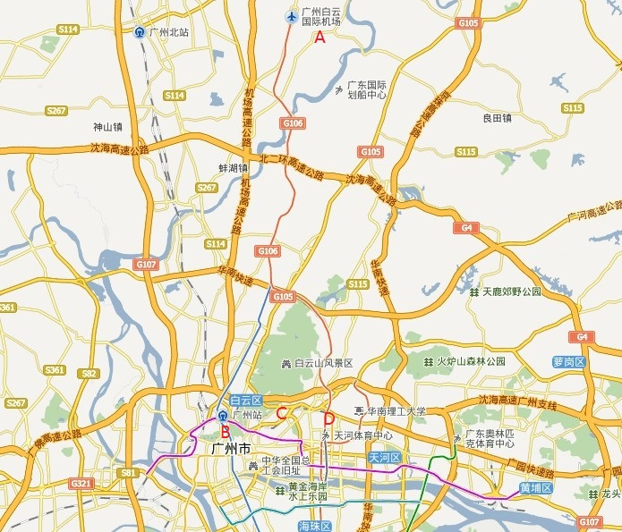
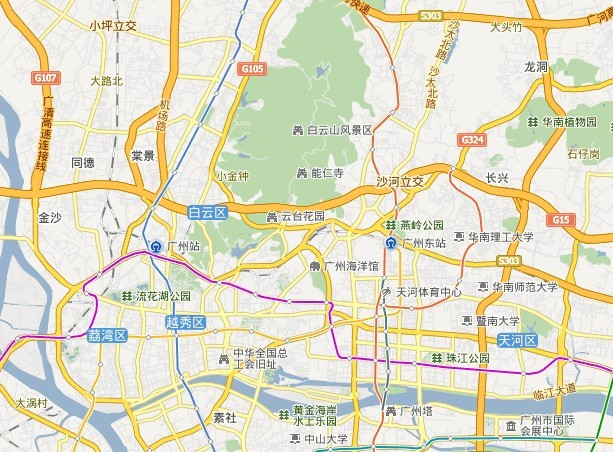
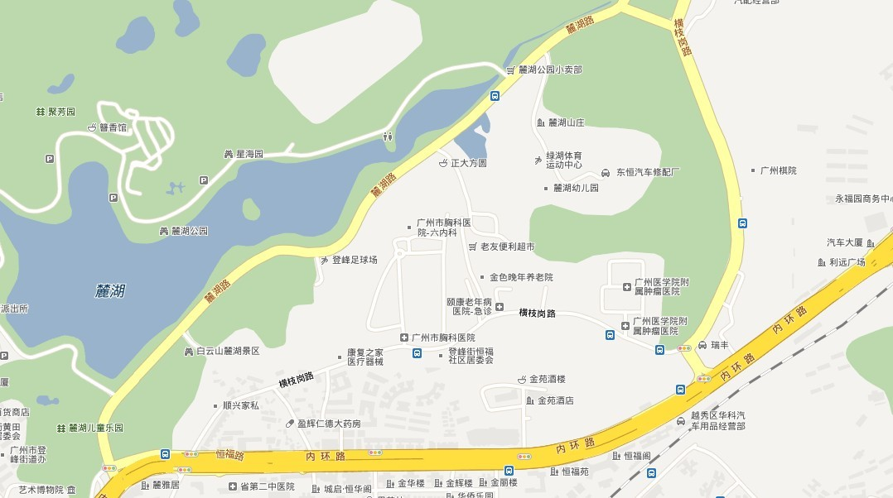
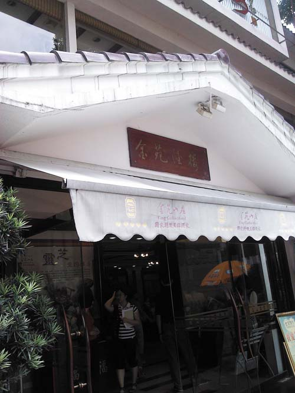
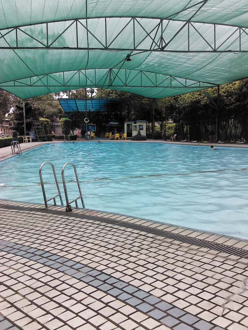

原文由 小小亦默 发表于 2012-5-29 22:20:19 :
 可惜是考试周
可惜是考试周 各省、自治区、直辖市、计划单列市棋牌运动管理中心、棋院、棋类协会及相关机构：
为了进一步促进我国五子棋技术水平的提高，更好地满足广大五子棋爱好者的交流需求，根据2012年全国竞赛计划，国家体育总局棋牌运动管理中心定于2012年6月22日至6月24日在广州市举办2012年“欧派杯”全国五子棋公开赛。现将规程印发给你们，请各单位接到通知后，组织本地区的五子棋爱好者报名参赛。
附件：
二一二年五月二十九日
［ 奇林 于 2012-5-29 20:56:10 时花20金币送鲜花一朵］
［ 路痴 于 2012-5-29 21:09:27 时花20金币送鲜花一朵］
［ 文英 于 2012-5-29 22:06:36 时花20金币送鲜花一朵］
［ 清缘 于 2012-5-29 22:21:13 时花20金币送鲜花一朵］
［ 小红眼镜 于 2012-5-29 22:43:06 时花20金币送鲜花一朵］
［ 水晶铃铃 于 2012-5-29 22:53:12 时花20金币送鲜花一朵］
［ 三道 于 2012-5-29 23:37:51 时花20金币送鲜花一朵］
［ 尕孩 于 2012-5-30 21:23:53 时花20金币送鲜花一朵］
［此帖子已被 无尽 在 2012-6-3 11:03:26 编辑过］
［ 萱萱 于 2012-6-3 11:19:19 时花20金币送鲜花一朵］
［此帖子已被 无尽 在 2012-6-6 20:18:53 编辑过］
［ 小小亦默 于 2012-6-12 22:27:08 时花20金币送鲜花一朵］
附件1：
2012年“欧派杯”全国五子棋公开赛竞赛规程
一、主办单位：国家体育总局棋牌运动管理中心
中国围棋协会五子棋分会
承办单位：广州棋院
广州市围棋协会
协办单位：广州市围棋协会五子棋分会
广东欧派家居集团有限公司
二、竞赛时间：
三、地点：广州棋院
四、参赛办法
（一）比赛分为男子组和女子组，不允许跨组参加比赛。
（二）全国五子棋爱好者均可参赛。
五、竞赛办法
（一）本次比赛采用国家体育总局棋牌运动管理中心最新审定的《中国五子棋竞赛规则》。
（二）各组视参赛人数，采用瑞士制或循环制。实际赛制和轮次视最终报名人数确定，原则不超过9轮。
（三）比赛时限：每方60分钟包干，超时判负。
（四）名次区分办法：
1.单循环赛制的名次区分办法：比较积分区分名次，积分高者名次列前；如积分相同则依次比较小分、胜局和直胜区分名次，均为高者列前；如再相同则不涉及录取名次的为并列名次，涉及录取名次的进行加赛决定最终名次。
2.积分编排制的名次区分办法：采用比较积分来区分名次，积分高者名次列前；如积分相同则依次比较对手分、中间对手分、胜局来区分名次，均为高者列前；如再相同，则不涉及录取名次的为并列名次，涉及录取名次的进行加赛。
3.加赛办法：加赛首先采用双盘制，每方一次先手，时限为每方7分钟，每走一步加5秒，如两盘加赛总分不能分出胜负，则再加赛采用单盘制，每方5分钟，每走一步加3秒，直到有一方取胜为止。
六、裁判员和仲裁委员会
（一）设立赛风赛纪委员会。赛风赛纪委员会负责比赛期间赛风赛纪的全面检查和监督。
（二）裁判长、副裁判长由国家体育总局棋牌运动管理中心委派，承办单位根据需要和精干的原则，选派有执裁经验的裁判员担任大会工作。
（三）设立仲裁委员会，仲裁委员会主任由主办单位任命，仲裁委员从参赛各队领队、教练中产生。
（四）比赛中出现争议，可书面向仲裁委员会提请仲裁并交纳仲裁费200元，胜诉后退回。
（五）抽签工作由赛会竞赛组会同裁判长共同主持。
七、录取名次和奖励
（一）各组参赛人数多于50人时录取前12名；参赛人数在49-30人时录取前8名；参赛人数在10-29人时录取前6名；参赛人数在4-9人时录取前3名，参赛人数在3人以下时录取第1名。
（二）各组录取的前3名选手发给获奖证书、奖牌和奖金；4-8名的选手发给获奖证书和奖金；9-12名选手发给获奖证书。
（三）设体育道德风尚奖，发给证书。
（四）在比赛中获得名次的棋手可按《中国五子棋段级位制》（试行）的规定获得相应的中国五子棋段、级位称号。请参赛棋手每人携带一寸免冠彩色照片1张，以备办理中国五子棋段、级位证书用。
八、报名与报到
（一）参赛者须以书面形式报名，填写报名表；同时还需要电子报名及电子照片，并交纳报名费每人100元。需预订返程票者请在报名表里填写订购返程票目的地、车次或航班、人数、日期并在报到时确认。
（二）报名表请寄承办单位：广州棋院培训竞赛部，地址：广州市越秀区横枝岗路289号，邮编510650；电子报名表及电子照片发送邮箱：gzqiyuan@21cn.com。
报名费请汇到以下账户：
开户名：广州市围棋协会
开户行：工行银山支行
账号：3602087909200003024
（三）报名咨询：
1. 总局棋牌运动管理中心 刘彦艳 010-87559186
2. 广州棋院朱凯13622275426袁智斌020-83238106, 13632193921
（四）报名截止日期为2012年6月16日（当地邮戳），以收到报名材料和报名费为准，未收到报名材料和报名费均视为无效，不予编排，逾期不予受理。
（五）参赛人员由组委会统一购买比赛期间意外伤害保险，请务必在报名表中标注身份证号码，以便办理保险。
（六）报名材料递交后如需要人员变更，经竞赛组委会批准，每改动一人另需缴手续费50元，
（七）参赛名单确认后因故未参赛者，报名费不退。由于自然灾害或不可抗拒的原因所造成的参赛者缺席或迟到，经组委会批准，可酌情处理。
（八）参赛选手赛前一天到赛区报到，提前报到者大会不予接待。
报到地点：广州市金苑酒店
地址：广州市越秀区恒福路117号
金苑酒店服务台电话：020-83581688
（九）
九、器材和经费
（一）比赛器材和经费由承办单位负责解决。
（二）收取的报名费全部用于比赛。
（三）参赛者交通费用自理。参赛者食宿由大会统一安排，食宿标准为每人每天200元，费用自理。
十、未尽事宜另行通知。
［ 奇林 于 2012-5-29 20:56:44 时花20金币送鲜花一朵］
［ 文英 于 2012-5-29 22:19:33 时花20金币送鲜花一朵］
［ 尕孩 于 2012-5-30 21:23:22 时花20金币送鲜花一朵］
［ 萱萱 于 2012-6-3 11:19:39 时花20金币送鲜花一朵］
［此帖子已被 无尽 在 2012-6-10 15:45:14 编辑过］
哈哈，终于不用愁车费了！
［ 淡月疏星 于 2012-5-29 21:23:50 时花20金币送鲜花一朵］
 无尽现在是广州棋院的人喽？可惜是考试周
无尽现在是广州棋院的人喽？可惜是考试周支持。。。办个比赛太不容易了。。
引用：缺考，然后补考就是了。
原文由 小小亦默 发表于 2012-5-29 22:20:19 :

［ 黄药师 于 2012-5-29 23:04:38 时花20金币送鲜花一朵］
引用：流逝大师准备去？
原文由 流逝 发表于 2012-5-29 22:48:01 :
好消息~
 打车过去20多分钟。。。我肯定参加了。。
打车过去20多分钟。。。我肯定参加了。。那个谁，竞猜伺候！
看看今年诅咒是否继续！
引用：
原文由 梧桐风 发表于 2012-5-29 22:58:06 :引用：流逝大师准备去？
原文由 流逝 发表于 2012-5-29 22:48:01 :
好消息~
 偶用错号了~~
偶用错号了~~
流猪估计会去吧！
引用：
原文由 黄药师 发表于 2012-5-29 23:10:52 :那个谁，竞猜伺候！
看看今年诅咒是否继续！
黄蓉父亲也相信这个吗？比赛就在家门的感觉，确实挺好的..
 我就在广州，也想参加比赛啊
我就在广州，也想参加比赛啊［ 水晶铃铃 于 2012-6-2 9:39:29 时花20金币送鲜花一朵］
引用：喵~不是那W校都能a考的f，像我W校是要重修的，一想到和弟妹一起上n，考，情何以堪吖？！
原文由 黄药师 发表于 2012-5-29 22:29:06 :引用：缺考，然后补考就是了。
原文由 小小亦默 发表于 2012-5-29 22:20:19 :

可以泡学妹还不好引用：
原文由 尕孩 发表于 2012-5-30 21:28:35 :引用：喵~不是那W校都能a考的f，像我W校是要重修的，一想到和弟妹一起上n，考，情何以堪吖？！
原文由 黄药师 发表于 2012-5-29 22:29:06 :引用：缺考，然后补考就是了。
原文由 小小亦默 发表于 2012-5-29 22:20:19 :
引用：
原文由 江西五子 发表于 2012-5-30 19:30:58 :
你在广州，平时不见你出来下棋呢。
［ 奇林 于 2012-6-2 9:41:47 时花20金币送鲜花一朵］
 终于有机会近距离仰望各位大师了楼上还可以自带拥抱无数楼上的楼上莫不是比赛的那个轩轩？
终于有机会近距离仰望各位大师了楼上还可以自带拥抱无数楼上的楼上莫不是比赛的那个轩轩？
图1 A白云机场 C广州棋院
B广州火车站 D广州火车东站
推荐交通线路（陆续补充）
到金苑酒店
1、从广州火车站走约380米到草暖公园站乘坐111路(坐6站)到省银行医院站下。过马路往右走约170米到金苑酒店
2、从广州火车站打的到金苑酒店，约16块。
到广州棋院
1、从广州白云国际机场(新机场)走约220米到机场快线A乘车区乘坐空港快线2号线A(机场至广州中心皇冠假日酒店)(坐4站)到机场快线广州中心皇冠假日酒店站下，往后走到广东电视台站1转乘63路(往石槎路)(坐4站)到横枝岗路北站(广州棋院)下。往后走约100米到广州棋院
2、从白云机场坐地铁2号线到广州火车站下（地铁直接接驳），打的约18块到广州棋院
3、从广州火车站走约40米到广州火车站总站乘坐257路(坐6站)到白云索道站2下。走约480米到广州棋院

图2 广州站（广州火车站）
广州东站（广州火车东站）
云台花园附近（广州棋院）

广州棋院与金苑酒店
［此帖子已被 无尽 在 2012-6-3 10:58:45 编辑过］
［ 悟石 于 2012-6-4 9:22:20 时花20金币送鲜花一朵］
引用：
原文由 小小亦默 发表于 2012-6-3 0:41:45 :
楼上 一文钱愁死一好汉啊，何况2000元！
一文钱愁死一好汉啊，何况2000元！引用：
原文由 一期一会 发表于 2012-6-5 13:33:33 :
想去，突然发现自己卡里已经只有十位数了
1500就可以搞定的引用：
原文由 一期一会 发表于 2012-6-5 13:33:33 :
想去，突然发现自己卡里已经只有十位数了
十位数的含义是？…………
个、十、百、千、万、十万、百万、千万、亿、十亿!!!!!!!!!
男子组冠军5000元，亚军3000元，季军1500元，4-8名各800元
女子组冠军2000元，亚军1200元，季军800元，4-8名各500元
补充一下还要看参赛人数而定，10个人以内就不是前8了，具体看规程
［此帖子已被 无尽 在 2012-6-6 23:41:12 编辑过］
引用：
原文由 无尽 发表于 2012-6-6 20:18:39 :男子组冠军5000元，亚军3000元，季军1500元，4-8名各800元
女子组冠军2000元，亚军1200元，季军800元，4-8名各500元
 真多~广州美女多
真多~广州美女多奖金整体挺丰厚的 唯一的小问题是 女子冠军2000 相比男子的一半还少 不过还是赞一个
估算：男子，前2名够补贴参赛费用 女子，冠军勉强够补贴参赛费用（还不计请假损失）
这个就算挺丰厚了，哀哉
这是奖金最多的一次了吧
引用：上次棋心愉悦组织的比赛我去了~
原文由 水晶铃铃 发表于 2012-6-2 9:40:24 :引用：
原文由 江西五子 发表于 2012-5-30 19:30:58 :你在广州，平时不见你出来下棋呢。
［ 奇林 于 2012-6-2 9:41:47 时花20金币送鲜花一朵］
引用：可是妹不喜g重修的兄。。
原文由 极地剑客 发表于 2012-5-31 6:33:50 :可以泡学妹还不好
原文由 尕孩 发表于 2012-5-30 21:28:35 :引用：喵~不是那W校都能a考的f，像我W校是要重修的，一想到和弟妹一起上n，考，情何以堪吖？！
原文由 黄药师 发表于 2012-5-29 22:29:06 :引用：缺考，然后补考就是了。
原文由 小小亦默 发表于 2012-5-29 22:20:19 :
引用：
原文由 尕孩 发表于 2012-6-8 12:47:50 :引用：可是妹不喜g重修的兄。。
原文由 极地剑客 发表于 2012-5-31 6:33:50 :可以泡学妹还不好
原文由 尕孩 发表于 2012-5-30 21:28:35 :引用：喵~不是那W校都能a考的f，像我W校是要重修的，一想到和弟妹一起上n，考，情何以堪吖？！
原文由 黄药师 发表于 2012-5-29 22:29:06 :引用：缺考，然后补考就是了。
原文由 小小亦默 发表于 2012-5-29 22:20:19 :
你们比我邪恶。。。杀手们加油啊~！
今天与水鸟、铃铃离开棋院，路过金苑，想进去尝尝味道，因为父亲节的缘故，要排队，结果到别的地方吃了

金苑附近娱乐休闲的场所还不少，健身中心、游泳池都对外开放，游泳35元早上7点到晚上忘了几点，35元不限时。。。
报名期限仍宽限一些时间，要抓紧哦~
［此帖子已被 无尽 在 2012-6-17 18:48:14 编辑过］
［ 尕孩 于 2012-6-17 22:02:19 时花20金币送鲜花一朵］
42楼的游泳池看上去挺干净又便宜，想去游泳~~44楼有机会我们可以PK下！

游泳叫上青子。。爱长隆水上乐园。。浸在水里太久皮会皱的。。
回48楼，去过的泳场有9块、12块，无尽关注的是交通便利嘛~。
［此帖子已被 圊籽 在 2012-6-20 16:50:32 编辑过］
偶尔游几次，35还好啦。我有次福州游，20。。。下 水不到5分钟被赶起来。因为打雷，特悲催
［ wuxiao 于 2012-6-21 10:22:01 时花20金币送鲜花一朵］
［ wuxiao 于 2012-6-21 10:22:01 时花20金币送鲜花一朵］
［ wuxiao 于 2012-6-21 10:22:01 时花20金币送鲜花一朵］
［ wuxiao 于 2012-6-21 10:22:01 时花20金币送鲜花一朵］
［ wuxiao 于 2012-6-21 10:22:01 时花20金币送鲜花一朵］
［ wuxiao 于 2012-6-21 10:22:01 时花20金币送鲜花一朵］
［ wuxiao 于 2012-6-21 10:22:01 时花20金币送鲜花一朵］
［ wuxiao 于 2012-6-21 10:22:01 时花20金币送鲜花一朵］
［ wuxiao 于 2012-6-21 10:22:01 时花20金币送鲜花一朵］
［ wuxiao 于 2012-6-21 10:22:01 时花20金币送鲜花一朵］
补充~青子想去的长隆，门票180。Y(n_n)Y。游泳PK的话青子想凑热闹
引用：
原文由 圊籽 发表于 2012-6-20 18:19:23 :补充~青子想去的长隆，门票180。Y(n_n)Y。游泳PK的话青子想凑热闹
话说参赛选手名单及有奖竞猜呢？
引用：
原文由 没事摆石子玩 发表于 2012-6-6 23:11:51 :奖金整体挺丰厚的 唯一的小问题是 女子冠军2000 相比男子的一半还少 不过还是赞一个
 现在看这发言 依然味道十足
现在看这发言 依然味道十足